Algorithmes sur les graphes
Introduction
Un des premiers algorithmes qu’on doit savoir utiliser sur un graphe est celui de son parcours. Parcourir un graphe, c’est visiter ses différents sommets, afin de pouvoir opérer une action tour à tour sur eux. Les deux algorithmes fondamentaux permettant de parcourir un graphe s'appellent :
- le parcours en profondeur d'abord ;
- le parcours en largeur d'abord.
Selon les actions opérées au cours d'un parcours, on peut détecter des cycles dans le graphe, trouver le chemin le plus court entre deux sommets, calculer la distance entre deux sommets, etc. Les algorithmes sur les graphes sont très utilisés dans la vie courante, ils permettent par exemple :
- le routage des paquets de données dans un réseau ;
- de trouver le chemin le plus court entre deux villes (utilisé par les GPS) ;
- de sortir d'un labyrinthe ;
- etc.
Dans la suite, on considérera les deux graphes \(\small{G_1}\) et \(\small{G_2}\) suivants :
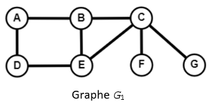
\(~~~~~~~~~\)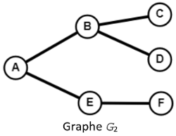
Ils seront représentés par listes de successeurs et implémentés par des dictionnaires.
G1 = {
"A": ["B", "D"],
"B": ["A", "C", "E"],
"C": ["B", "E", "F", "G"],
"D": ["A", "E"],
"E": ["B", "C", "D"],
"F": ["C"],
"G": ["C"]
}
G2 = {
"A": ["B", "E"],
"B": ["A", "C", "D"],
"C": ["B"],
"D": ["B"],
"E": ["A", "F"],
"F": ["E"]
}
Parcours en profondeur et en largeur
Comparaison des deux algorithmes
Ces deux algorithmes ont le même but : explorer tous les sommets atteignables d'un graphe à partir d'un sommet de départ. L'idée est d'explorer les voisins (ou successeurs) rencontrés au fur et à mesure en marquant les sommets visités pour ne pas tourner en rond.
Profondeur VS largeur
A partir d'un sommet, on explore un de ses voisins (ou successeurs), et ainsi de suite. S'il n'y a plus de voisins, on revient au sommet précédent et on passe à un autre de ses voisins.
Cette façon de faire implique que chaque "branche" est explorée jusqu'au bout, avant de revenir sur nos pas, d'où le nom de parcours en profondeur (ou DFS (pour Depth First Search) en anglais).
A partir d'un sommet, on explore tous ses voisins (ou successeurs), puis on explore tous les voisins de ces voisins, et ainsi de suite.
Le parcours balaie ainsi chaque "branche" au même rythme, d'où le nom de parcours en largeur (ou BFS (pour Breadth First Search) en anglais).
Remarque
La seule différence entre ces deux algorithmes est donc l'ordre dans lequel les voisins sont traités. Cela permet d'écrire le même algorithme pour les deux parcours, en changeant juste la collection qui stocke les sommets à visiter : une pile pour le parcours en profondeur et une file pour le parcours en largeur.
Principe de l'algorithme de parcours en profondeur
- On choisit un sommet de départ.
- On l'empile.
- Tant que la pile n'est pas vide :
- On dépile son sommet.
- S'il n'a pas encore été visité, on le marque comme visité (en le plaçant dans un dictionnaire
sommets_visitespar exemple) et on empile tous ses voisins non encore visités. - Sinon on ne fait rien.
- On renvoie alors le dictionnaire obtenu.
En stockant les sommets encore à visiter dans une pile, on s'assure que ce sont les derniers sommets découverts qui vont être visités en premier (LIFO, Last In First Out).
Exemple
On applique cet algorithme sur le graphe \(\small{G_1}\) précédent à partir du sommet \(\small{A}\) par exemple :
G1 = {
"A": ["B", "D"],
"B": ["A", "C", "E"],
"C": ["B", "E", "F", "G"],
"D": ["A", "E"],
"E": ["B", "C", "D"],
"F": ["C"],
"G": ["C"]
}
- On empile le sommet \(\small{A}\) dans une pile :
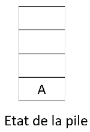
- On dépile le sommet de la pile qui est \(\small{A}\).
- \(\small{A}\) n'a pas encore été visité donc on le place dans le dictionnaire
visites:visites = {'A': True}. - On empile ses voisins \(\small{B}\) et \(\small{D}\) (qui n'ont pas encore été visités) dans la pile :
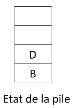
- On recommence puisque la pile n'est pas vide.
- On dépile le sommet de la pile qui est \(\small{D}\).
- \(\small{D}\) n'a pas encore été visité donc on le place dans le dictionnaire :
visites = {'A': True, 'D': True}. - On empile son seul voisin (\(\small{E}\)) qui n'a pas encore été visité (puisque \(\small{A}\) l'a été) dans la pile :
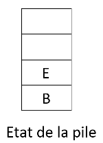
- On recommence puisque la pile n'est pas vide.
- On dépile le sommet de la pile qui est \(\small{E}\).
- \(\small{E}\) n'a pas encore été visité donc on le place dans le dictionnaire :
visites = {'A': True, 'D': True, 'E': True}. - On empile ses deux voisins (\(\small{B}\) et \(\small{C}\)) qui n'ont pas encore été visités (puisque \(\small{D}\) l'a été) dans la pile :
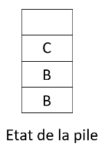
Remarque
Le sommet \(\small{B}\) est donc empilé deux fois, en tant que voisin des sommets \(\small{A}\) et \(\small{E}\) mais n'est toujours pas marqué comme "visité" !
- On recommence puisque la pile n'est pas vide.
- On dépile le sommet de la pile qui est \(\small{C}\).
- \(\small{C}\) n'a pas encore été visité donc on le place dans le dictionnaire :
visites = {'A': True, 'D': True, 'E': True, 'C': True}. - On empile ses trois voisins (\(\small{B}\), \(\small{F}\) et \(\small{G}\)) qui n'ont pas encore été visités (puisque \(\small{E}\) l'a été) dans la pile :
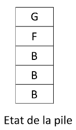
- On recommence puisque la pile n'est pas vide.
- On dépile le sommet de la pile qui est \(\small{G}\).
- \(\small{G}\) n'a pas encore été visité donc on le place dans le dictionnaire :
visites = {'A': True, 'D': True, 'E': True, 'C': True, 'G': True}. - \(\small{G}\) n'a aucun voisin non visité.
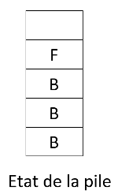
- On recommence puisque la pile n'est pas vide.
- On dépile le sommet de la pile qui est \(\small{F}\).
- \(\small{F}\) n'a pas encore été visité donc on le place dans le dictionnaire :
visites = {'A': True, 'D': True, 'E': True, 'C': True, 'G': True, 'F': True}. - \(\small{F}\) n'a aucun voisin non visité.
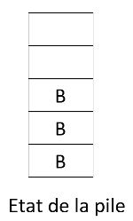
- On recommence puisque la pile n'est pas vide.
- On dépile le sommet de la pile qui est \(\small{B}\).
- \(\small{B}\) n'a pas encore été visité donc on le place dans le dictionnaire :
visites = {'A': True, 'D': True, 'E': True, 'C': True, 'G': True, 'F': True, 'B': True}.
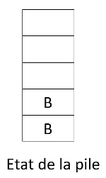
- On recommence puisque la pile n'est pas vide.
- On dépile le sommet de la pile qui est \(\small{B}\).
- \(\small{B}\) a déjà été visité.
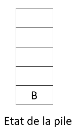
- On recommence puisque la pile n'est pas vide.
- On dépile le sommet de la pile qui est \(\small{B}\).
- \(\small{B}\) a déjà été visité.
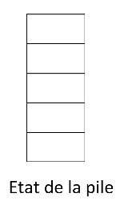
- La pile est vide !
- Le dictionnaire retourné est donc
visites = {'A': True, 'D': True, 'E': True, 'C': True, 'G': True, 'F': True, 'B': True}.
Remarque
On a utilisé ici un dictionnaire pour marquer les sommets (en les ajoutant dans le dictionnaire). La valeur d'un sommet visité (ici True) n'a pas d'importance.
On aurait donc pu utiliser ici une structure de données abstraite plus simple : l'ensemble (voir Exercice 2).
On verra par la suite l'intérêt d'avoir utilisé un dictionnaire plutôt qu'une autre structure.
Exercice 1 ⭐⭐
Écrire pour la classe grapheNoLs une nouvelle méthode parcours_DFS(), qui utilise une pile.
Pour tester cette méthode, on pourra utiliser la fonction suivante qui génère un graphe simple non-orienté à nb_sommets sommets, nb_aretes arêtes et qui est représenté par un dictionnaire :
from random import choice
def gen_graph_no_ls(nb_sommets, nb_aretes):
alphabet = [chr(i+65) for i in range(nb_sommets)]
G = grapheNoLs()
for lettre in alphabet :
G.add_sommet(lettre)
s1 = choice(alphabet)
s2 = choice(alphabet)
for i in range(nb_aretes):
while s1 == s2 or G.existe_arete(s1, s2):
s1 = choice(alphabet)
s2 = choice(alphabet)
G.add_arete(s1, s2)
return G
Principe de l'algorithme de parcours en largeur
C'est simple, il suffit de remplacer la pile par une file !
- On choisit un sommet de départ.
- On l'enfile.
- Tant que la file n'est pas vide :
- On défile son premier élément.
- S'il n'a pas encore été visité, on le marque comme visité (en le plaçant dans un dictionnaire
sommets_visitespar exemple) et on enfile tous ses voisins non encore visités. - Sinon on ne fait rien.
En stockant les sommets encore à visiter dans une file, on s'assure que ce sont les premiers sommets découverts qui vont être visités en premier (FIFO, First In First Out).
Exemple
On applique cet algorithme sur le graphe \(\small{G_1}\) précédent à partir du sommet \(\small{A}\) par exemple :
G1 = {
"A": ["B", "D"],
"B": ["A", "C", "E"],
"C": ["B", "E", "F", "G"],
"D": ["A", "E"],
"E": ["B", "C", "D"],
"F": ["C"],
"G": ["C"]
}
- On enfile le sommet \(\small{A}\) dans une file :
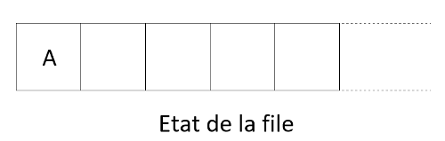
- On défile l'élément en tête de file qui est \(\small{A}\).
- \(\small{A}\) n'a pas encore été visité donc on le place dans le dictionnaire
visites:visites = {'A': True}. - On enfile ses voisins \(\small{B}\) et \(\small{D}\) (qui n'ont pas encore été visités) dans la file :
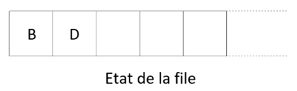
- On recommence puisque la file n'est pas vide.
- On défile la tête de la file qui est \(\small{B}\).
- \(\small{B}\) n'a pas encore été visité donc on le place dans le dictionnaire :
visites = {'A': True, 'B': True}. - On enfile ses deux voisins (\(\small{C}\) et \(\small{E}\)) qui n'ont pas encore été visités (puisque \(\small{A}\) l'a été) dans la file :
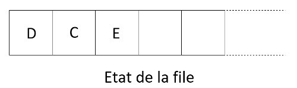
- On recommence puisque la file n'est pas vide.
- On défile la tête de la file qui est \(\small{D}\).
- \(\small{D}\) n'a pas encore été visité donc on le place dans le dictionnaire :
visites = {'A': True, 'B': True, 'D': True}. - On enfile son seul voisin (\(\small{E}\)) qui n'a pas encore été visité (puisque \(\small{A}\) l'a été) dans la file :
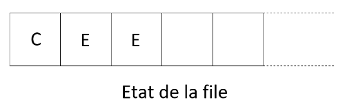
- On recommence puisque la file n'est pas vide.
- On défile la tête de la file qui est \(\small{C}\).
- \(\small{C}\) n'a pas encore été visité donc on le place dans le dictionnaire :
visites = {'A': True, 'B': True, 'D': True, 'C': True}. - On enfile ses trois voisins (\(\small{E}\), \(\small{F}\) et \(\small{G}\)) qui n'ont pas encore été visités (puisque \(\small{B}\) l'a été) dans la file :
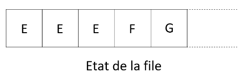
- On recommence puisque la file n'est pas vide.
- On défile la tête de la file qui est \(\small{E}\).
- \(\small{E}\) n'a pas encore été visité donc on le place dans le dictionnaire :
visites = {'A': True, 'B': True, 'D': True, 'C': True, 'E': True}. - \(\small{E}\) n'a aucun voisin non visité.
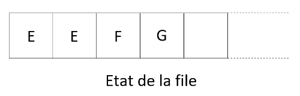
- On recommence puisque la file n'est pas vide.
- On défile la tête de la file qui est \(\small{E}\).
- \(\small{E}\) a déjà été visité.
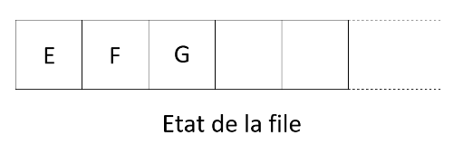
- On recommence puisque la file n'est pas vide.
- On défile la tête de la file qui est \(\small{E}\).
- \(\small{E}\) a déjà été visité.
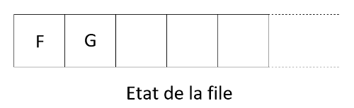
- On recommence puisque la file n'est pas vide.
- On défile la tête de la file qui est \(\small{F}\).
- \(\small{F}\) n'a pas encore été visité donc on le place dans le dictionnaire :
visites = {'A': True, 'B': True, 'D': True, 'C': True, 'E': True, 'F': True}. - \(\small{F}\) n'a aucun voisin non visité.
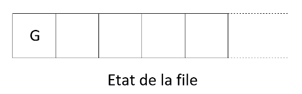
- On recommence puisque la file n'est pas vide.
- On défile la tête de la file qui est \(\small{G}\).
- \(\small{G}\) n'a pas encore été visité donc on le place dans le dictionnaire :
visites = {'A': True, 'B': True, 'D': True, 'C': True, 'E': True, 'F': True, 'G': True}. - \(\small{G}\) n'a aucun voisin non visité.
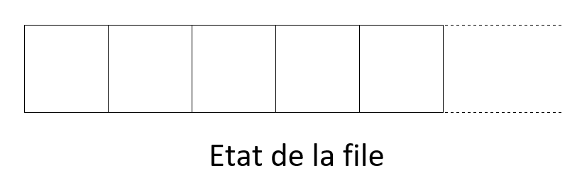
- La file est vide !
- Le dictionnaire retourné est donc
visites = {'A': True, 'B': True, 'D': True, 'C': True, 'E': True, 'F': True, 'G': True}.
Exercice 2 ⭐⭐
Écrire pour la classe grapheNoLs une nouvelle méthode parcours_BFS(), qui utilise une file.
Attention
Quel que soit le parcours, l'ordre de parcours dépend de l'ordre dans lequel sont stockés les voisins dans les listes de voisins/successeurs car celui-ci détermine l'ordre d'ajout dans la pile ou la file. Il y a donc plusieurs réponses possibles pour un même parcours.
Repérer la présence d'un cycle/circuit dans un graphe
Rappelons les définitions d'un cycle et d'un circuit :
- Dans un graphe non-orienté, un cycle est une suite d'arêtes consécutives (chaîne) dont les deux sommets extrémités sont identiques.
- Dans un graphe orienté, un circuit est une suite d'arcs consécutifs (chemin) dont les deux sommets extrémités sont identiques.
Principe de l'algorithme de détection de cycle
Il suffit d'adapter légèrement, au choix, l'un des deux algorithmes de parcours du graphe. Si lors du parcours on rencontre (en dépilant ou en défilant) un sommet déjà visité (marqué grâce à une liste), on a trouvé un cycle !
En effet, cela signifie que ce sommet a été ajouté au moins deux fois dans la pile ou dans la file, ce qui veut dire que l'on peut l'atteindre par au moins deux sommets différents. Ces deux chemins ayant pour origine le sommet de départ du parcours, on a nécessairement un cycle.
L'algorithme est alors identique à celui d'un parcours en stoppant le parcours si un cycle est trouvé.
Enfin, si le graphe non-orienté est connexe, on peut tester la présence d'un cycle à partir de n'importe quel sommet de départ. En revanche, pour un graphe non connexe (et toujours non-orienté), il faut s'assurer de parcourir tous ses sommets. On peut par exemple lancer la détection à partir de chaque sommet.
Exercice 3 ⭐⭐
Écrire pour la classe grapheNoLs la méthode is_cycle() qui renvoie True si le graphe présente un cycle.
Principe de l'algorithme de détection d'un circuit
La précédente technique ne marche plus si l'on recherche la présence d'un circuit dans un graphe orienté. En effet, ce n'est pas parce qu'un sommet a été ajouté deux fois dans une pile ou une file qu'il y a présence d'un cycle. Il est possible que ce sommet soit atteint par deux arcs entrants comme l'exemple suivant :
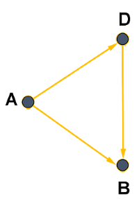
Par contre, il est toujours possible d'adapter l'un des deux algorithmes de parcours du graphe, en comparant le sommet de départ avec les successeurs de chaque sommet découvert pendant le parcours. Si l'un des successeurs est le sommet de départ, c'est qu'il y a un circuit ! Il suffit de faire cette vérification en partant de n'importe quel sommet du graphe.Exercice 4 ⭐⭐
Écrire pour la classe grapheOLs la méthode is_circuit() qui renvoie True si le graphe présente un circuit.
Recherche d'un chemin/d'une chaîne dans un graphe
Rappelons quelques définitions :
- Dans un graphe non orienté, une chaîne est une séquence ordonnée d'arêtes telle que chaque arête a une extrémité en commun avec l'arête suivante.
- Dans un graphe orienté, un chemin désigne une séquence ordonnée d'arcs consécutifs.
Remarque
Dans la suite, on ne parlera que de chaînes ou de chemins simples, c'est-à-dire n'empruntant pas deux fois la même arête (ou le même arc).
En utilisant un parcours en profondeur ou en largeur, on peut trouver tous les sommets accessibles à partir d'un sommet de départ. Cela permet d'écrire très facilement un algorithme qui renvoie True s'il existe un chemin pour aller d'un point \(\small{A}\) à un point \(\small{B}\). Il suffit de lancer l'un des deux parcours à partir du sommet \(\small{A}\) et de regarder à la fin du parcours si le sommet \(\small{B}\) a été atteint (s'il est dans le dictionnaire sommets_visites).
Cependant, cet algorithme ne permet pas d'exhiber un tel chemin. Pour cela, il faut travailler un peu plus.
Principe de l'algorithme de recherche d'un chemin/d'une chaîne
Une idée est d'utiliser différemment le dictionnaire sommets_visites. Celui-ci ne servira plus à marquer (à True) les sommets visités mais associera à chaque sommet, le sommet qui permet de l'atteindre pour la première fois (le premier sommet duquel il est voisin dans le parcours).
Autrement dit, dès qu'on visite un sommet, il faut l'associer à tous ses voisins (non encore visités) dans le dictionnaire. On initialisera à None le sommet initial dans le dictionnaire. A la fin du parcours, il suffira de "remonter" le dictionnaire du sommet de fin au sommet de début.
Voici le principe plus en détail (en utilisant un parcours en profondeur) :
- On choisit le sommet de départ que l'on associe à
None. - On l'empile.
- Tant que la pile n'est pas vide :
- On dépile son sommet
s. - On empile tous ses voisins non encore visités et on les associe à la valeur
sdans le dictionnaire.
La méthode parcours_chemin_DFS() suivante, basée sur un parcours en profondeur, permet de construire ce dictionnaire :
def parcours_chemin_DFS(self, debut):
sommets_visites = {debut: None} # on associe le sommet de départ à None
p = Pile()
p.empiler(debut)
while not p.est_vide():
s = p.depiler()
liste_voisins = [y for y in self.voisins(s) if y not in sommets_visites]
for voisin in liste_voisins:
p.empiler(voisin)
sommets_visites[voisin] = s # on associe s à tous les voisins de s pas encore visités
return sommets_visites
Exemple
On peut lancer le parcours sur le graphe \(\small{G_1}\) à partir du sommet \(\small{A}\) :
>>> parcours_chemin_DFS("A")
{'A': None, 'B': 'A', 'D': 'A', 'E': 'D', 'C': 'E', 'F': 'C', 'G': 'C'}
Pour trouver un chemin entre le sommet \(\small{A}\) et le sommet \(\small{G}\), il faut "remonter" les sommets à partir de \(\small{G}\) :
- On cherche \(\small{G}\) : il est associé à la valeur \(\small{C}\) donc on a pu atteindre \(\small{G}\) à partir de \(\small{C}\).
- On cherche \(\small{C}\) : atteint à partir de \(\small{E}\).
- On cherche \(\small{E}\) : atteint à partir de \(\small{D}\).
- On cherche \(\small{D}\) : atteint à partir de \(\small{A}\).
Un chemin possible entre \(\small{A}\) et \(\small{G}\) est donc :
A --> D --> E --> C --> G.
Remarque
Nous étions sûr de remonter jusqu'à \(\small{A}\) puisque \(\small{G}\), se trouvant dans le dictionnaire, était nécessairement atteignable en partant de \(\small{A}\). Si un sommet ne se trouve pas dans le dictionnaire, on sait alors qu'il n'existe pas de chemin vers ce sommet en partant de \(\small{A}\).
La méthode chemin_DFS(debut, fin) permet d'effectuer le travail de "remonter" en renvoyant une liste ch contenant les sommets du chemin trouvé entre les sommets debut et fin. Elle ajoute les sommets à ch au fur et à mesure de la remontée jusqu'à tomber sur celui de départ et renvoie ensuite cette liste qui a été préalablement renversée pour obtenir les sommets dans le bon ordre :
def chemin_DFS(self, debut, fin):
sommets_visites = self.parcours_chemin_DFS(debut)
if fin not in sommets_visites:
return None
s = fin
ch = [s] # on ajoute le sommet de fin à partir duquel commence la "remontée"
while s != debut: # tant qu'on ne trouve pas le sommet de départ
s = sommets_visites[s] # on remonte en passant au sommet associé
ch.append(s) # qu'on ajoute au chemin
ch.reverse() # ne pas oublier de renverser la liste pour renvoyer le chemin dans le bon ordre
return ch
Exemple
On vérifie alors le résultat du précédent exemple :
>>> chemin_DFS("A", "G")
['A', 'D', 'E', 'C', 'G']
Remarque
On constate que le chemin n'est pas le plus court car on peut faire mieux : A --> B --> C --> G.
Peut-on trouver le chemin le plus court ? La réponse est oui !
Recherche d'un plus court chemin
En faisant la même recherche à partir d'un parcours en largeur, on obtiendrait un plus court chemin (en nombre d'arêtes/arcs).
En effet, l'algorithme de recherche en largeur explore d'abord les sommets à une distance 1 du sommet de départ, puis ceux à distance 2 du sommet de départ, etc. Ainsi, chacun des autres sommets est atteint en passant par un nombre minimal d'arêtes (ou arcs), ce qui assure de trouver un plus court chemin (en nombre d'arêtes/arcs) vers chacun des autres sommets.
# on remplace la pile par une file
def parcours_chemin_BFS(self, debut):
sommets_visites = {debut: None} # on associe le sommet de départ à None
f = File()
f.enfiler(debut)
while not f.est_vide():
s = f.defiler()
liste_voisins = [y for y in self.voisins(s) if y not in sommets_visites]
for voisin in liste_voisins:
f.enfiler(voisin)
sommets_visites[voisin] = s # on associe s à tous les voisins de s pas encore visités
return sommets_visites
# exactement la même fonction que cheminDFS (en remplacant juste l'appel à la première ligne)
def chemin_BFS(self, debut, fin):
sommets_visites = self.parcours_chemin_BFS(debut)
if fin not in sommets_visites:
return None
s = fin
ch = [s]
while s != debut:
s = sommets_visites[s]
ch.append(s)
ch.reverse()
return ch
Exemple
On constate sur l'exemple précédent qu'on obtient le plus court chemin :
>>> chemin_BFS("A", "G")
['A', 'B', 'C', 'G']
Distance entre les sommets
En modifiant le rôle du dictionnaire sommets_visites utilisé dans la recherche de chemin du parcours en largeur, on peut très facilement trouver la distance du sommet de départ à tous les autres. On va utiliser sommets_visites pour associer à chaque sommet la distance qui le sépare du sommet d'origine. La distance d'un sommet découvert est celle du sommet d'où l'on vient, plus 1 !
En initialisant une distance égale à 0 pour le sommet de départ, on obtient, en changeant uniquement une ligne, les distances entre chaque sommet et le sommet de départ :
def parcours_distance_BFS(self, debut):
sommets_visites = {debut: 0} # debut est à distance 0 de lui-même
f = File()
f.enfiler(debut)
while not f.est_vide():
s = f.defiler()
liste_voisins = [y for y in self.voisins(s) if y not in sommets_visites]
for voisin in liste_voisins:
f.enfiler(voisin)
sommets_visites[voisin] = sommets_visites[s] + 1 # la distance est celle de s (d'où l'on vient) + 1
return sommets_visites
Exemple
On peut vérifier les distances entre le sommet \(\small{A}\) et les autres dans le graphe \(\small{G_1}\).
>>> parcours_distance_BFS("A")
{'A': 0, 'B': 1, 'D': 1, 'C': 2, 'E': 2, 'F': 3, 'G': 3}
Les notions de plus court chemin ou de distance que l'on vient de voir, correspondent au nombre d'arêtes/arcs séparant les sommets. On suppose donc que chaque arête à le même coût dans ce calcul. Autrement dit, nos algorithmes s'appliquent sur des graphes non pondérés (ou des graphes dans lesquels toutes les arêtes ont le même poids). Avec des graphes pondérés, les arêtes n'ont pas toutes le même coût, ce qui redéfinit cette notion de distance. C'est le cas de la plupart des graphes rencontrés dans la vie courante. On ne peut donc plus appliquer l'algorithme de plus court chemin étudié. Il en existe heureusement d'autres : le plus connu d'entre eux est l'algorithme de Dijskstra (voir DM).
Bilan
- Les algorithmes de parcours de graphe permettent de visiter tous les sommets d'un graphe. On a le choix entre un parcours en profondeur d'abord ou un parcours en largeur d'abord.
- La différence entre ces deux algorithmes est l'ordre dans lequel on visite tous les sommets. On peut donc les écrire de manière similaire en changeant juste la structure de données qui stocke les sommets à visiter : une pile pour poursuivre le parcours avec les derniers sommets rencontrés (parcours en profondeur) ou une file pour poursuivre le parcours avec les premiers sommets rencontrés (parcours en largeur).
- Pour ne pas tourner en rond, il faut marquer les sommets visités au cours du parcours. On a utilisé un dictionnaire pour faire ce travail.
- En modifiant le rôle et la façon d'utiliser ce dictionnaire, on peut facilement adapter les algorithmes de parcours pour repérer la présence d'un cycle, pour trouver un chemin entre deux sommets, voire le plus court d'entre eux.
- L'algorithme de parcours en largeur assure de trouver un plus court chemin dans un graphe non pondéré car il explore les différents sommets dans l'ordre de leur distance à celui de départ (ceux à distance 1, puis ceux à distance 2, etc.).
- L'algorithme de Dijkstra (hors programme) permet de trouver le plus court chemin entre deux sommets dans un graphe pondéré : c'est celui utilisé pour router les paquets dans un réseau, pour nous guider avec un GPS, pour sortir d'un labyrinthe...